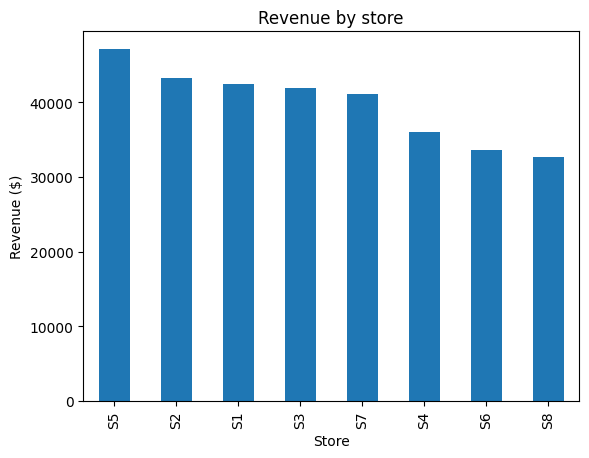
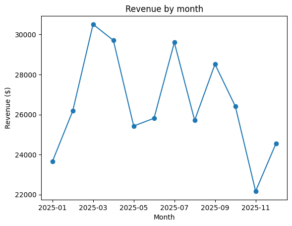

12. Grouping and summarizing#

A table of 2,000 sales is too long to read. A manager asks short questions instead: Which store sells the most? Which product category brings in the most money? Which month was the best? In this chapter, we answer such questions with one line of pandas each: we put the rows into groups and compute one number for each group. Then we draw our first charts.
In this chapter, you will learn to:
count how often each value of a column appears, with
value_counts();compute a total, an average or a count for each group, with
groupby();group by two columns, compute several summaries at once with
agg(), and turn a result back into a DataFrame;draw a bar chart and a line chart of a summary, with matplotlib.
import pandas as pd
import matplotlib.pyplot as plt
DATA_URL = "https://raw.githubusercontent.com/y-rosenthal/yr-pre-ml/main/data/"
Besides pandas, the first cell imports matplotlib, the most widely used Python package for charts.
matplotlib.pyplot is the part of it that draws charts, and plt is its usual short name. We use it at the end
of the chapter.
12.1. The data#
We use the sales of the chain’s eight stores again (the appendix The datasets describes the file). Each chapter runs on its own, so we first add the two columns that we made in the chapter New columns and sorting: the revenue of each sale, and its month.
sales = pd.read_csv(DATA_URL + "sales.csv")
sales["revenue"] = (sales["units"] * sales["price"] * (1 - sales["discount"])).round(2)
sales["month"] = sales["date"].str[:7]
sales.head()
| date | store | region | category | units | price | discount | revenue | month | |
|---|---|---|---|---|---|---|---|---|---|
| 0 | 2025-01-01 | S1 | North | Clothing | 3 | 46.99 | 0.1 | 126.87 | 2025-01 |
| 1 | 2025-01-01 | S8 | West | Grocery | 9 | 2.99 | 0.0 | 26.91 | 2025-01 |
| 2 | 2025-01-01 | S2 | North | Grocery | 11 | 5.99 | 0.0 | 65.89 | 2025-01 |
| 3 | 2025-01-01 | S8 | West | Grocery | 9 | 11.99 | 0.0 | 107.91 | 2025-01 |
| 4 | 2025-01-01 | S5 | East | Grocery | 13 | 3.99 | 0.2 | 41.50 | 2025-01 |
Each row is one sale: the day, the store and its region, the product category, the number of units, the price of
one unit and the discount. revenue is the money that the store received, in dollars, and month holds the first
seven characters of the date, such as 2025-01.
12.2. Counting values with value_counts()#
The simplest summary is a count. How many sales did each store make?
sales["store"].value_counts()
store
S1 287
S2 269
S5 261
S3 247
S4 240
S6 239
S7 231
S8 226
Name: count, dtype: int64
value_counts() counts how often each value of a column appears. The result is a Series: its index holds the
values (here, the stores), and its values are the counts, from the largest to the smallest. Store S1 made the most
sales, 287, and store S8 the fewest, 226. Together, the eight counts add up to the 2,000 rows. (count under the
result is the name of the Series.)
Often we want shares instead of counts: what fraction of the sales is in each category? The option
normalize=True divides each count by the total:
sales["category"].value_counts(normalize=True)
category
Grocery 0.3970
Clothing 0.2635
Home 0.1960
Electronics 0.1435
Name: proportion, dtype: float64
The shares add up to 1. About 40% of the sales (0.397) are grocery sales, and only about 14% (0.1435) are
electronics sales. This time the name of the Series is proportion, another word for a share.
Try it: count the sales of each
region. Which region has the most sales?
12.3. Grouping: one number for each group#
value_counts() can only count. A manager also wants totals: how much revenue did each store make? For that,
we must put the rows of each store together, and add up their revenue. Let’s start with a table so small that we
can check the result by hand:
small = pd.DataFrame({
"store": ["S1", "S2", "S1", "S2", "S1"],
"revenue": [100, 40, 50, 60, 30],
})
small.groupby("store")["revenue"].sum()
store
S1 180
S2 100
Name: revenue, dtype: int64
Read the last line from left to right:
small.groupby("store")puts the rows into groups, one group for each store: the rows of S1 (revenue 100, 50 and 30) and the rows of S2 (40 and 60).["revenue"]chooses the column to summarize..sum()adds up the revenue in each group: 180 for S1 and 100 for S2.
The result is a Series with one value for each group, and the groups as its index, in alphabetical order. This pattern, split the rows into groups, apply a summary to each group, and combine the results, is often called split-apply-combine.
Now the same line on the real data:
sales.groupby("store")["revenue"].sum()
store
S1 42520.57
S2 43254.78
S3 41889.24
S4 36059.84
S5 47128.05
S6 33606.35
S7 41093.03
S8 32674.68
Name: revenue, dtype: float64
2,000 rows became 8 numbers. Store S5 made the most revenue, about \(47,128, and store S8 the least, about \)32,675. Notice that S1, which made the most sales, does not have the most revenue: the number of sales is not the whole story.
12.4. Other summaries: mean, count and size#
Instead of sum(), we can use the other summaries that we know from the chapter Comparisons and Boolean masks,
such as mean(), min() and max(). Here is the average revenue of one sale in each store, rounded to cents:
sales.groupby("store")["revenue"].mean().round(2)
store
S1 148.16
S2 160.80
S3 169.59
S4 150.25
S5 180.57
S6 140.61
S7 177.89
S8 144.58
Name: revenue, dtype: float64
Store S5 has the largest average sale, \(180.57, and store S6 the smallest, \)140.61. So S5 is first in total revenue because its sales are bigger: it made fewer sales than S1 and S2.
To count the rows of each group, we use size(). It needs no column:
sales.groupby("store").size()
store
S1 287
S2 269
S3 247
S4 240
S5 261
S6 239
S7 231
S8 226
dtype: int64
These are the same numbers as value_counts() gave above, but in the order of the stores. count(), as in
sales.groupby("store")["revenue"].count(), is almost the same: it counts the values of the chosen column in each
group, but it skips missing values. sales.csv has no missing values, so here count() and size() agree. The
next chapter is about data with missing values.
12.5. Choose the number columns first#
What happens if we forget to choose a column?
sales.groupby("store").mean()
---------------------------------------------------------------------------
TypeError Traceback (most recent call last)
File /opt/hostedtoolcache/Python/3.13.18/x64/lib/python3.13/site-packages/pandas/core/groupby/groupby.py:1942, in GroupBy._agg_py_fallback(self, how, values, ndim, alt)
1941 try:
-> 1942 res_values = self._grouper.agg_series(ser, alt, preserve_dtype=True)
1943 except Exception as err:
File /opt/hostedtoolcache/Python/3.13.18/x64/lib/python3.13/site-packages/pandas/core/groupby/ops.py:864, in BaseGrouper.agg_series(self, obj, func, preserve_dtype)
862 preserve_dtype = True
--> 864 result = self._aggregate_series_pure_python(obj, func)
866 npvalues = lib.maybe_convert_objects(result, try_float=False)
File /opt/hostedtoolcache/Python/3.13.18/x64/lib/python3.13/site-packages/pandas/core/groupby/ops.py:885, in BaseGrouper._aggregate_series_pure_python(self, obj, func)
884 for i, group in enumerate(splitter):
--> 885 res = func(group)
886 res = extract_result(res)
File /opt/hostedtoolcache/Python/3.13.18/x64/lib/python3.13/site-packages/pandas/core/groupby/groupby.py:2454, in GroupBy.mean.<locals>.<lambda>(x)
2451 else:
2452 result = self._cython_agg_general(
2453 "mean",
-> 2454 alt=lambda x: Series(x, copy=False).mean(numeric_only=numeric_only),
2455 numeric_only=numeric_only,
2456 )
2457 return result.__finalize__(self.obj, method="groupby")
File /opt/hostedtoolcache/Python/3.13.18/x64/lib/python3.13/site-packages/pandas/core/series.py:6549, in Series.mean(self, axis, skipna, numeric_only, **kwargs)
6541 @doc(make_doc("mean", ndim=1))
6542 def mean(
6543 self,
(...) 6547 **kwargs,
6548 ):
-> 6549 return NDFrame.mean(self, axis, skipna, numeric_only, **kwargs)
File /opt/hostedtoolcache/Python/3.13.18/x64/lib/python3.13/site-packages/pandas/core/generic.py:12420, in NDFrame.mean(self, axis, skipna, numeric_only, **kwargs)
12418 **kwargs,
12419 ) -> Series | float:
> 12420 return self._stat_function(
12421 "mean", nanops.nanmean, axis, skipna, numeric_only, **kwargs
File /opt/hostedtoolcache/Python/3.13.18/x64/lib/python3.13/site-packages/pandas/core/generic.py:12377, in NDFrame._stat_function(self, name, func, axis, skipna, numeric_only, **kwargs)
12375 validate_bool_kwarg(skipna, "skipna", none_allowed=False)
12376
> 12377 return self._reduce(
12378 func, name=name, axis=axis, skipna=skipna, numeric_only=numeric_only
File /opt/hostedtoolcache/Python/3.13.18/x64/lib/python3.13/site-packages/pandas/core/series.py:6457, in Series._reduce(self, op, name, axis, skipna, numeric_only, filter_type, **kwds)
6453 raise TypeError(
6454 f"Series.{name} does not allow {kwd_name}={numeric_only} "
6455 "with non-numeric dtypes."
6456 )
-> 6457 return op(delegate, skipna=skipna, **kwds)
File /opt/hostedtoolcache/Python/3.13.18/x64/lib/python3.13/site-packages/pandas/core/nanops.py:147, in bottleneck_switch.__call__.<locals>.f(values, axis, skipna, **kwds)
146 else:
--> 147 result = alt(values, axis=axis, skipna=skipna, **kwds)
149 return result
File /opt/hostedtoolcache/Python/3.13.18/x64/lib/python3.13/site-packages/pandas/core/nanops.py:404, in _datetimelike_compat.<locals>.new_func(values, axis, skipna, mask, **kwargs)
402 mask = isna(values)
--> 404 result = func(values, axis=axis, skipna=skipna, mask=mask, **kwargs)
406 if datetimelike:
File /opt/hostedtoolcache/Python/3.13.18/x64/lib/python3.13/site-packages/pandas/core/nanops.py:720, in nanmean(values, axis, skipna, mask)
719 the_sum = values.sum(axis, dtype=dtype_sum)
--> 720 the_sum = _ensure_numeric(the_sum)
722 if axis is not None and getattr(the_sum, "ndim", False):
File /opt/hostedtoolcache/Python/3.13.18/x64/lib/python3.13/site-packages/pandas/core/nanops.py:1701, in _ensure_numeric(x)
1699 if isinstance(x, str):
1700 # GH#44008, GH#36703 avoid casting e.g. strings to numeric
-> 1701 raise TypeError(f"Could not convert string '{x}' to numeric")
1702 try:
TypeError: Could not convert string '2025-01-012025-01-032025-01-052025-01-122025-01-122025-01-132025-01-142025-01-152025-01-162025-01-202025-01-202025-01-202025-01-202025-01-212025-01-212025-01-212025-01-222025-01-222025-01-222025-01-232025-01-242025-01-262025-01-302025-01-302025-01-312025-02-012025-02-032025-02-032025-02-052025-02-052025-02-062025-02-072025-02-072025-02-082025-02-102025-02-122025-02-152025-02-172025-02-182025-02-192025-02-202025-02-202025-02-212025-02-222025-02-232025-02-232025-02-242025-02-262025-03-022025-03-022025-03-032025-03-042025-03-092025-03-102025-03-112025-03-112025-03-132025-03-132025-03-152025-03-152025-03-162025-03-162025-03-222025-03-222025-03-252025-03-262025-03-272025-03-282025-03-282025-03-292025-03-312025-03-312025-03-312025-04-012025-04-012025-04-012025-04-022025-04-032025-04-052025-04-082025-04-092025-04-122025-04-152025-04-172025-04-192025-04-212025-04-212025-04-222025-04-232025-04-262025-04-262025-04-292025-04-292025-04-302025-05-022025-05-022025-05-022025-05-032025-05-052025-05-062025-05-072025-05-082025-05-082025-05-092025-05-102025-05-112025-05-122025-05-142025-05-172025-05-172025-05-202025-05-212025-05-212025-05-222025-05-222025-05-222025-05-222025-05-232025-05-232025-05-232025-05-252025-05-262025-05-282025-05-292025-05-302025-05-312025-05-312025-05-312025-06-012025-06-042025-06-042025-06-042025-06-042025-06-052025-06-062025-06-062025-06-062025-06-072025-06-092025-06-092025-06-122025-06-132025-06-132025-06-132025-06-142025-06-152025-06-152025-06-152025-06-172025-06-252025-06-292025-06-302025-07-012025-07-022025-07-022025-07-062025-07-062025-07-072025-07-082025-07-092025-07-092025-07-112025-07-122025-07-122025-07-142025-07-142025-07-172025-07-172025-07-192025-07-202025-07-202025-07-222025-07-232025-07-252025-07-262025-07-282025-07-302025-07-312025-08-012025-08-042025-08-062025-08-062025-08-072025-08-082025-08-082025-08-102025-08-112025-08-122025-08-132025-08-142025-08-142025-08-162025-08-172025-08-222025-08-232025-08-232025-08-242025-08-252025-08-272025-08-282025-08-292025-08-292025-08-302025-08-312025-08-312025-09-022025-09-032025-09-032025-09-072025-09-082025-09-102025-09-112025-09-172025-09-192025-09-192025-09-212025-09-252025-09-252025-09-262025-09-282025-09-292025-09-302025-09-302025-09-302025-09-302025-10-022025-10-022025-10-022025-10-042025-10-052025-10-052025-10-082025-10-092025-10-132025-10-142025-10-162025-10-172025-10-202025-10-252025-10-272025-10-292025-11-012025-11-042025-11-052025-11-062025-11-072025-11-112025-11-122025-11-142025-11-152025-11-172025-11-182025-11-192025-11-202025-11-222025-11-242025-11-252025-11-262025-11-292025-11-292025-11-302025-11-302025-12-012025-12-042025-12-052025-12-062025-12-072025-12-072025-12-092025-12-092025-12-092025-12-102025-12-102025-12-112025-12-152025-12-152025-12-162025-12-192025-12-212025-12-212025-12-222025-12-232025-12-232025-12-242025-12-282025-12-302025-12-30' to numeric
The above exception was the direct cause of the following exception:
TypeError Traceback (most recent call last)
Cell In[9], line 1
----> 1 sales.groupby("store").mean()
File /opt/hostedtoolcache/Python/3.13.18/x64/lib/python3.13/site-packages/pandas/core/groupby/groupby.py:2452, in GroupBy.mean(self, numeric_only, engine, engine_kwargs)
2445 return self._numba_agg_general(
2446 grouped_mean,
2447 executor.float_dtype_mapping,
2448 engine_kwargs,
2449 min_periods=0,
2450 )
2451 else:
-> 2452 result = self._cython_agg_general(
2453 "mean",
2454 alt=lambda x: Series(x, copy=False).mean(numeric_only=numeric_only),
2455 numeric_only=numeric_only,
2456 )
2457 return result.__finalize__(self.obj, method="groupby")
File /opt/hostedtoolcache/Python/3.13.18/x64/lib/python3.13/site-packages/pandas/core/groupby/groupby.py:1998, in GroupBy._cython_agg_general(self, how, alt, numeric_only, min_count, **kwargs)
1995 result = self._agg_py_fallback(how, values, ndim=data.ndim, alt=alt)
1996 return result
-> 1998 new_mgr = data.grouped_reduce(array_func)
1999 res = self._wrap_agged_manager(new_mgr)
2000 if how in ["idxmin", "idxmax"]:
File /opt/hostedtoolcache/Python/3.13.18/x64/lib/python3.13/site-packages/pandas/core/internals/managers.py:1469, in BlockManager.grouped_reduce(self, func)
1465 if blk.is_object:
1466 # split on object-dtype blocks bc some columns may raise
1467 # while others do not.
1468 for sb in blk._split():
-> 1469 applied = sb.apply(func)
1470 result_blocks = extend_blocks(applied, result_blocks)
1471 else:
File /opt/hostedtoolcache/Python/3.13.18/x64/lib/python3.13/site-packages/pandas/core/internals/blocks.py:393, in Block.apply(self, func, **kwargs)
387 @final
388 def apply(self, func, **kwargs) -> list[Block]:
389 """
390 apply the function to my values; return a block if we are not
391 one
392 """
--> 393 result = func(self.values, **kwargs)
395 result = maybe_coerce_values(result)
396 return self._split_op_result(result)
File /opt/hostedtoolcache/Python/3.13.18/x64/lib/python3.13/site-packages/pandas/core/groupby/groupby.py:1995, in GroupBy._cython_agg_general.<locals>.array_func(values)
1992 return result
1994 assert alt is not None
-> 1995 result = self._agg_py_fallback(how, values, ndim=data.ndim, alt=alt)
1996 return result
File /opt/hostedtoolcache/Python/3.13.18/x64/lib/python3.13/site-packages/pandas/core/groupby/groupby.py:1946, in GroupBy._agg_py_fallback(self, how, values, ndim, alt)
1944 msg = f"agg function failed [how->{how},dtype->{ser.dtype}]"
1945 # preserve the kind of exception that raised
-> 1946 raise type(err)(msg) from err
1948 if ser.dtype == object:
1949 res_values = res_values.astype(object, copy=False)
TypeError: agg function failed [how->mean,dtype->object]
Without a column, groupby tries to average every column, and some columns hold text. The last line of the
error says so. In Colab (pandas 2) it is TypeError: agg function failed [how->mean,dtype->object]: the mean
failed on a column of the dtype object, which is text. In pandas 3 it reads TypeError: dtype 'str' does not support operation 'mean'. The average of a date or of a store name makes no sense.
The fix is to choose the number columns before the summary. One column takes single brackets, as above. Several columns take double brackets, and give a DataFrame:
sales.groupby("store")[["units", "revenue"]].sum()
| units | revenue | |
|---|---|---|
| store | ||
| S1 | 1346 | 42520.57 |
| S2 | 1220 | 43254.78 |
| S3 | 1110 | 41889.24 |
| S4 | 1073 | 36059.84 |
| S5 | 1114 | 47128.05 |
| S6 | 1039 | 33606.35 |
| S7 | 1004 | 41093.03 |
| S8 | 1043 | 32674.68 |
Now each store has two totals: the units it sold and its revenue. Store S1 sold the most units, 1,346.
Common mistake:
sales.groupby("store").sum()gives no error, but its result is useless. pandas “adds” text by gluing it together, so thedatecolumn becomes one very long piece of text for each store. Always choose the columns beforesum()ormean(). (Another way isnumeric_only=True, as insales.groupby("store").sum(numeric_only=True), which keeps only the number columns.)
12.6. Sorting a grouped result#
A grouped result comes in the order of the groups. To see the best stores first, we sort it by its values. A
Series has sort_values() too, and needs no column name:
store_revenue = sales.groupby("store")["revenue"].sum()
store_revenue.sort_values(ascending=False)
store
S5 47128.05
S2 43254.78
S1 42520.57
S3 41889.24
S7 41093.03
S4 36059.84
S6 33606.35
S8 32674.68
Name: revenue, dtype: float64
We kept the result in a variable, store_revenue, because we use it again for a chart. Sorted, the ranking is
clear: S5, then S2 and S1, and S6 and S8 at the bottom.
Try it: add
.head(3)at the end of the second line to see only the top 3 stores.
12.7. Grouping by two columns#
Is the best category the same in every region? To answer, we need one group for each combination of a region
and a category. We pass a list of two columns to groupby:
sales.groupby(["region", "category"])["revenue"].sum()
region category
East Clothing 21966.38
Electronics 32974.98
Grocery 10031.32
Home 15761.72
North Clothing 21956.87
Electronics 34094.31
Grocery 13197.92
Home 16526.25
South Clothing 20763.25
Electronics 30274.90
Grocery 10848.77
Home 16062.16
West Clothing 15724.36
Electronics 32547.47
Grocery 10720.85
Home 14775.03
Name: revenue, dtype: float64
There are 4 regions and 4 categories, so there are 16 groups. The index now has two levels: the region, and the category inside it. pandas writes each region only once, on the first of its four rows.
In every region, Electronics brings in the most revenue and Grocery the least. That is a surprise only at first: we saw that about 40% of the sales are grocery sales. Grocery sales are many but small, and electronics sales are few but big.
12.8. Several summaries at once with agg()#
To see both sides at once (how many sales, how big, and the total), we can ask for several summaries in one step.
agg() takes a list of summary names, as text:
sales.groupby("category")["revenue"].agg(["sum", "mean", "count"]).round(2)
| sum | mean | count | |
|---|---|---|---|
| category | |||
| Clothing | 80410.86 | 152.58 | 527 |
| Electronics | 129891.66 | 452.58 | 287 |
| Grocery | 44798.86 | 56.42 | 794 |
| Home | 63125.16 | 161.03 | 392 |
The result is a DataFrame with one column for each summary. Electronics has the fewest sales (287), but by far the largest average sale (\(452.58) and the largest total (\)129,891.66). Grocery has the most sales (794) and the smallest average ($56.42).
12.9. Back to a DataFrame with reset_index()#
A grouped result has the groups as its index. Sometimes we want an ordinary table instead, with the groups in a
column, for example to filter it as in the chapter Filtering rows. reset_index() moves the index into a
column. Here we use it, and then keep the stores that made more than $40,000:
by_store = sales.groupby("store")["revenue"].sum().reset_index()
by_store[by_store["revenue"] > 40000]
| store | revenue | |
|---|---|---|
| 0 | S1 | 42520.57 |
| 1 | S2 | 43254.78 |
| 2 | S3 | 41889.24 |
| 4 | S5 | 47128.05 |
| 6 | S7 | 41093.03 |
by_store is a DataFrame with two columns, store and revenue, and the index 0 to 7, so a filter works on
it as usual. Five of the eight stores made more than $40,000: S1, S2, S3, S5 and S7. (The
index of the result skips 3, 5 and 7: those rows, S4, S6 and S8, were filtered out.)
Try it: add
.reset_index()to the grouping by region and category above. How many rows and columns does the result have?
12.10. A bar chart#
A chart shows a summary at a glance. A Series has a plot() method, which draws it with matplotlib. Here are the
stores’ revenues, sorted, as a bar chart:
store_revenue.sort_values(ascending=False).plot(kind="bar")
plt.title("Revenue by store")
plt.xlabel("Store")
plt.ylabel("Revenue ($)")
plt.show()

Line by line:
.plot(kind="bar")draws one bar for each value of the Series. The index (the stores) gives the labels under the bars.plt.title,plt.xlabelandplt.ylabeladd a title, and a label to each axis: the horizontal axis (x) and the vertical axis (y).plt.show()shows the chart.
Because we sorted first, the bars go from the tallest to the shortest, and they are easy to compare: S5 is ahead, four stores follow close together, and S4, S6 and S8 are clearly behind.
In Thonny:
plt.show()opens the chart in a new window, and the program waits until you close the window. Then it runs the rest of the script.
Note: end every chart cell with
plt.show(). Without it, Thonny may show no chart at all, and Colab shows an extra line of text above the chart: the value of the cell’s last line.
Try it: change
kind="bar"tokind="barh"and run the cell again. What changes?
12.11. A line chart#
When the groups follow each other in time, such as months, a line chart shows how the summary changes:
monthly = sales.groupby("month")["revenue"].sum()
monthly.plot(kind="line", marker="o")
plt.title("Revenue by month")
plt.xlabel("Month")
plt.ylabel("Revenue ($)")
plt.show()

The months are text such as 2025-01, and groupby puts them in alphabetical order, which here is also the
order in time. marker="o" draws a dot for each month, and the line joins the dots. The monthly revenue moves
between about \(22,000 and \)30,500: it is highest in March and lowest in November. (Under the axis, matplotlib
writes only every second month, to leave room.)
Look at the vertical axis: it starts at about 22,000, not at 0. matplotlib does this for a line chart, so that the changes are easy to see, but it also makes them look bigger than they are. The best month brought in less than 40% more than the worst.
12.12. Summary#
df["col"].value_counts()counts how often each value appears, the largest count first. Withnormalize=True, it gives shares.df.groupby("key")["col"].sum()puts the rows into groups by the columnkey, and computes one value for each group.mean(),count(),min()andmax()work the same way.df.groupby("key").size()counts the rows of each group.Choose the number columns (
["col"]or[["a", "b"]]) beforesum()ormean().A grouped result is a Series: sort it with
sort_values(ascending=False), and take the top withhead().df.groupby(["a", "b"])makes one group for each combination of two columns..agg(["sum", "mean", "count"])computes several summaries at once, and gives a DataFrame.reset_index()turns the groups back into a column, so the result is an ordinary DataFrame.A chart:
series.plot(kind="bar")(orkind="line"), thenplt.title(...),plt.xlabel(...),plt.ylabel(...), and alwaysplt.show()at the end.
12.13. Further reading#
The pandas tutorials “How to calculate summary statistics” (https://pandas.pydata.org/docs/getting_started/intro_tutorials/06_calculate_statistics.html) and “How do I create plots in pandas?” (https://pandas.pydata.org/docs/getting_started/intro_tutorials/04_plotting.html).
12.14. Practice questions#
12.14.1. Question 1 (Easy)#
What share of the sales had no discount (a discount of 0.0)?
Answer
value_counts(normalize=True) gives the share of each discount. About half of the sales (0.509) had no discount.
sales["discount"].value_counts(normalize=True)
# Write your answer here
12.14.2. Question 2 (Easy)#
How many units were sold in each category? Which category sold the most units?
Answer
Group by category, choose units, and add up. Grocery sold by far the most units: 5,577.
sales.groupby("category")["units"].sum()
# Write your answer here
12.14.3. Question 3 (Medium)#
What is the average price of one unit in each category? Round to cents, and show the most expensive category first.
Answer
Electronics is the most expensive category, with an average price of \(315.46, and Grocery the cheapest, with \)8.43.
sales.groupby("category")["price"].mean().round(2).sort_values(ascending=False)
# Write your answer here
12.14.4. Question 4 (Medium)#
Make a DataFrame by_region with two columns, region and revenue (the total revenue of the region), sorted
from the largest revenue to the smallest.
Answer
Group and sum, then reset_index() gives a DataFrame, which we sort by its revenue column. North comes first,
with $85,775.35, and West last.
by_region = sales.groupby("region")["revenue"].sum().reset_index()
by_region = by_region.sort_values("revenue", ascending=False)
by_region
# Write your answer here
12.14.5. Question 5 (Medium)#
Run sales.groupby(["region", "store"]).size(). Why does the result have only 8 rows, and not 4 × 8 = 32?
Answer
groupby makes a group only for the combinations that appear in the data. Each store is in one region (S1 and S2
are in the North, and so on), so there are only 8 combinations of a region and a store.
sales.groupby(["region", "store"]).size()
# Write your answer here
12.14.6. Question 6 (Hard)#
Do bigger discounts come with more units per sale? Compute the average number of units of a sale for each discount level, and say what you see.
Answer
Group by discount and average units. The averages are all between 4 and 5 units, and the biggest discount
(0.2) has the smallest average, 4.05. In this data, bigger discounts do not come with more units per sale.
sales.groupby("discount")["units"].mean().round(2)
# Write your answer here
12.14.7. Question 7 (Hard)#
Draw a bar chart of the total revenue of each category, from the largest to the smallest, with a title and labels on both axes.
Answer
Group, sum, sort, and plot. Electronics has the tallest bar and Grocery the shortest.
category_revenue = sales.groupby("category")["revenue"].sum()
category_revenue.sort_values(ascending=False).plot(kind="bar")
plt.title("Revenue by category")
plt.xlabel("Category")
plt.ylabel("Revenue ($)")
plt.show()
# Write your answer here
12.14.8. Question 8 (Challenge)#
In each region, what share of the revenue comes from Electronics? In which region is that share the largest?
Answer
Compute two Series with the regions as their index: the total revenue of each region, and the electronics revenue of each region (filter the rows first). Dividing one by the other divides region by region. The share is largest in the West: 0.441, or about 44%.
region_revenue = sales.groupby("region")["revenue"].sum()
electronics = sales[sales["category"] == "Electronics"]
electronics_revenue = electronics.groupby("region")["revenue"].sum()
(electronics_revenue / region_revenue).round(3)
# Write your answer here